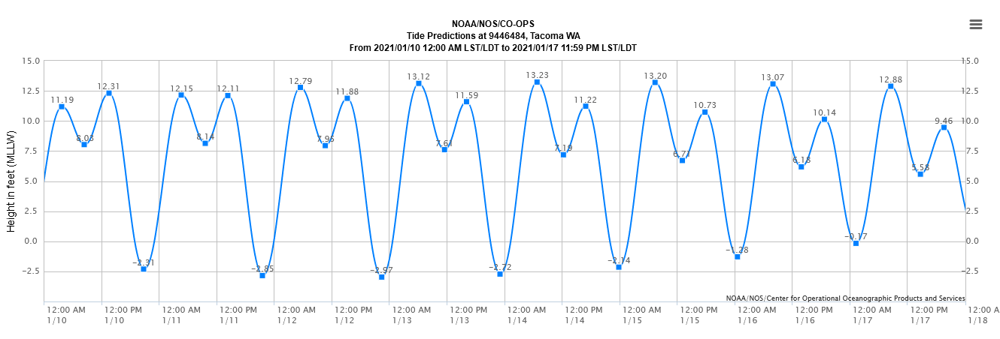

Coastal activities are heavily impacted by the rise in sea levels and planning strategies can be created to mitigate some of the potential damage. Stemming from a paper on the effects of sea level rise on port activities by Gracia, et. al. in 2019, this report aims to find where port operations might be impacted by sea level rise (SLR). The report "Projected Sea Level Rise for Washington State – A 2018 Assessment" was used as a basis for the final analysis. In this report the authors studied the effects of greenhouse gas emissions on sea level rise in Washington State and provided predicted levels both ‘best’ and ‘worst’ case scenarios that were used to analyze the coast. Our analysis was created to view potential impact on the Port of Tacoma due to rising water levels and which areas should be studied further to avoid potential economic impact to the city. Using light detection and ranging (LiDAR) data from Washington State LiDAR Consortium, we were able to predict which areas of the port might be underwater as levels rise.
Established in 1918, the Port of Tacoma in Tacoma’s Commencement Bay inside of the Puget Sound, is a natural deep-water port with depths up to 600 feet to accommodate large shipping vessels. It supports about 42,100 jobs for the area, generating $2.84 billion in wages through direct and indirect employment opportunities. 2,235 acres of Foreign Trade Zone #86 and various industries in operation on Port owned land plays a key role in the distribution of the country's products. Average wharf height of the terminals is about 19 feet however, areas surrounding those terminals could potientially be impacted as water levels rise. With about 25,000 acres of import/export land and intermodal transportations available, the protection of the Port of Tacoma against the effects of climate change is imprtant to understand.
Inspiration for this analysis comes from a study of the direct impacts of sea level rise on freeboard levels in four ports in NW Mediterranean. Due to the natural depths of the waters surrounding and within the Port of Tacoma, there would be very little influence on this measure. Instead, we decided to see how the rising levels could impact tidal levels as high and low tides ebb and flow to the shore and direct impacts on the land surrounding the terminals where the ships collect and distribute cargo. Tidal information was taken from January of 2021 and the highest tide levels were used to calculate potential effects of rising sea levels in addition to the highest tide. From the tidal chart, 13.2 was the highest observed height of water level and the base level used to adjust for future levels.
Additional water level heights were modeled on the scenarios presented in the 2018 report using their analysis that measures the levels of greenhouse gases (GHG) and the impacts of warming on tidal trends. They have a scenario for improvement (lower) GHG and worse (higher) GHG emissions and accumulation at varying cofindence levels. Assuming we want the more accurate projections, the 99% confidence level was used in the worst case senario trends. Hovering over the points in the chart below will show the data from each of the GHG scenarios at 99% and 95% calculations.
LiDAR data was retrieved from Washington State LiDAR Consortium website in the form of digital terrain models (DTM) and digital surface models (DSM) meaning the raw LiDAR points had already been processed. Using data in this form lessens the amount of time to download and process as well as computer memory for storage. The project it was used for was labled Green River Service Area for 2017. According to the metadata, the data were collected over the course of a few months from the winter of 2017 through the summer of 2018. Areas over the Port of Tacoma were collected from December 5-7.
ArcGIS Desktop 10.8 was used to process the data and analyze the areas that could be affected by higher water levels. Using Raster Calculator in the Spatial Analyst tools, an equation specifying surface levels of projected water level or lower which gave an out put of two values – those equal to and below or those higher than the water level. For example, to find areas impacted by water levels at 13.5 feet, the equation would be DSM <= 13.5, giving us the results. To single out just the lower levels we simply reclass the raster by giving all the higher values a label of NoData to exclude them from futher processess. From there we converted the raster to a polygon in order to compare the data to the other vector files. There were some places recorded that were not near the water so we did a select by location all of the levels that intersected the border of our reference water shapefile to eliminate excess 'noise'.
In the next ten years the worst case scenario projects a .3 foot rise in sea level. Adding that to the highest recorded tide from January of 2021 of 13.2 feet, puts the highest rise to 13.5 feet. Of course because the high tides last for only a short amount of time, it shows how that level of water would impact the Port. There appears to be very little impact with such a small increase. According to the data there is a total of 69 total acres of land, including shoreline, that will take on water.
By the year 2050 SLR is projected to rise by .5 feet with no improvements of GHG according to the report. This means that based on our analysis using the highest tide as a reference, the level would go up to 13.7 feet in the next 30 years. Fortunately it seems as though that will still have little impact on the Port and the operations that go on there. In fact, it doesn't appear to change from the 2030 levels at all with a total of 69 acres of land that will take on additional levels of water.
By the year 2100 we begin to see a more significant increase in water level which is predicted to reach 1.4 feet higher than it is today. That brings the total of high tide and SLR to 14.6 feet in the next 80 years. There are much more concentrated areas from the Hylebos Waterway in the Log Export Terminal as well as from the Blair Waterway into Husky Terminal. Currently, according to the Ports website, the Log Export Terminal is vacant so there is little disruption that would occur but if there were operations to begin again they would need to understand long term potential for damage. The Husky Terminal is in operation and has the capacity to handle large loads of imports. This could potentially raise some concerns as a total of 185 acres of land will see new levels of water intrusion.
The final figure from the year 2150 appears to have the most significant impact with the levels projected to rising by 2.3 feet. Keeping with our baseline tide level, this would put the highest tide level at 15.5 feet during the highest tide. In the next 130 years the Port should plan for the total 519 acres that will have some level of water during high tides. This figure does still include surrounding shoreline because it is there that distribution and other operations take place that could be impacted. While there is no immediate threat to Port operations due to sea level rise, it is a good idea to look long term for potential issues that could arrise. An earthquake could shift land levels and create the need for more immediate action.